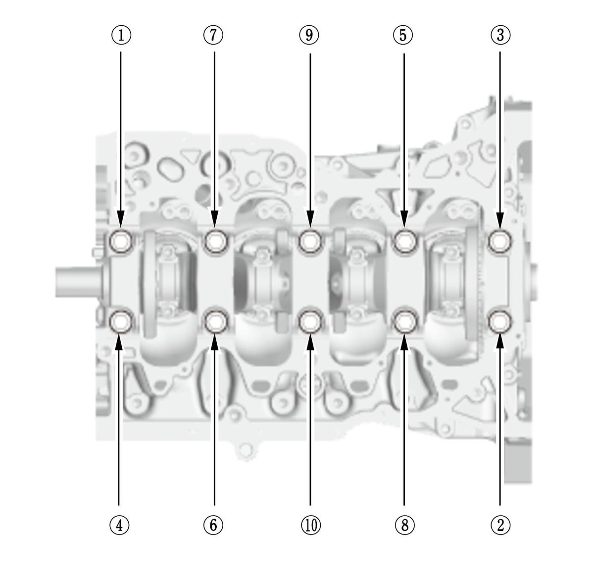

Crankshaft and CKP Pulse Plate Removal, Installation, and Inspection (K20C2): Removal
- Engine - Remove
- Transmission - Remove
- Pressure Plate, Clutch Disc, and Flywheel - Remove (M/T)
- Drive Plate - Remove (CVT)
- Transmission End Crankshaft Oil Seal - Remove
- Cylinder Head - Remove
- Oil Pan - Remove
- Oil Pump - Remove
- Oil Pump Chain - Remove
- Baffle Plate - Remove
- Connecting Rod Bearing Cap and Bearing Half - Remove
NOTE: Keep all connecting rod bearing caps and connecting rod bearings in order.
- Lower Block - Remove
1. Remove the 8 mm bolts in the sequence shown. 
Courtesy of HONDA, U.S.A., INC.2. Remove the bearing cap bolts. To prevent warpage, loosen the bolts in sequence 1/3 turn at a time; repeat the sequence until all bolts are loosened. 3. Using a flat blade screwdriver, separate the lower block from the engine block in the places shown. 4. Remove the lower block and the bearings. Keep all the bearings in order. - Crankshaft - Remove
1. Lift the crankshaft (A) out of the engine block, being careful not to damage the CKP pulse plate (B). - CKP Pulse Plate - Remove